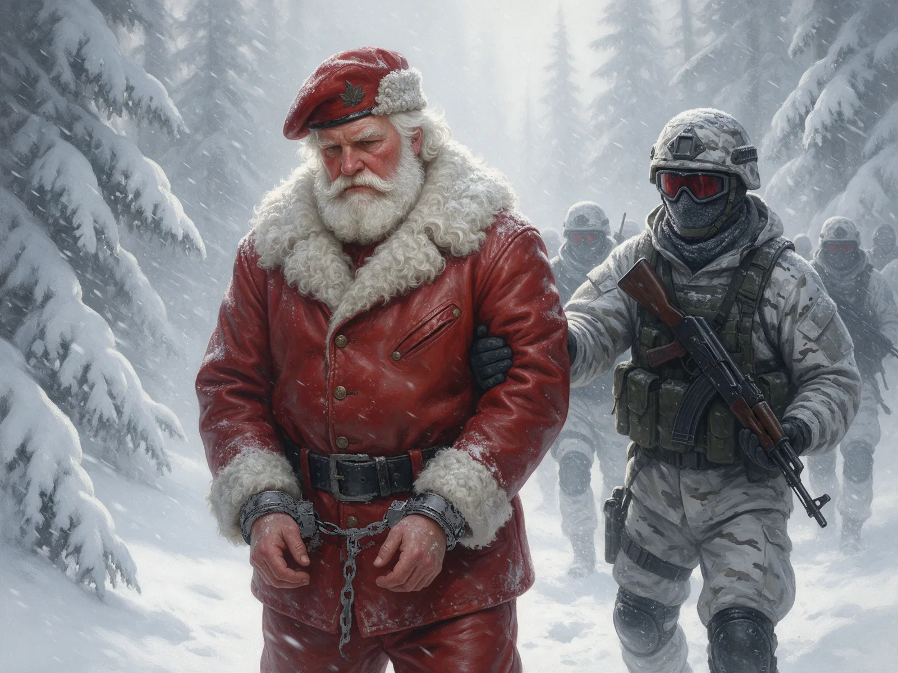

Red One

Jack O'Malley, an expert tracker known as "The Wolf," accepts a mysterious job that requires him to monitor seismic activity to help locate Santa. At the same mall, the real Santa Claus (code name "Red One") is making his annual public appearance with his chief bodyguard, Callum Drift, who leads the E.L.F. organization at the North Pole. While Santa meets with families, Callum carefully manages security and keeps away troublesome people who try to interrupt Santa.
After returning to the North Pole, which is hidden by a magical force field, Santa has a serious conversation with Callum, who is considering retirement because he has become discouraged about the holiday season. However, before they can discuss it further, Santa is kidnapped by a team of intruders who manage to break through the forcefield. Despite Callum's efforts to chase them on a snowmobile, the kidnappers escape with Santa.
The MORA protectorate, an organization led by Director Zoe Harlow, identifies Jack as the person who helped track Santa. They find him and bring him to the North Pole, where Jack is shocked to discover that mythological creatures are real. Although Jack is considered a "Level 4 Naughty Lister," Director Harlow hires Jack to help find the missing Santa.
Through their investigation, they discover that the kidnapper is Gryla, a Christmas witch. She has trapped Santa in her lair and plans to use his magical energy to power special snow globes called "glaskafigs" that can imprison people she considers naughty. The situation becomes personal for Jack when Gryla targets his estranged son, Dylan, sending him one of these globes. When Dylan touches it, he becomes trapped and is teleported to Gryla's lair. Jack uses another globe, sent to him by Gryla, to be with his son, hoping to rescue him.
Meanwhile, Callum and Director Harlow make a crucial discovery: Gryla never actually left the North Pole with Santa. Her followers are shape-shifters who can change their appearance. They have been disguising themselves as North Pole residents. Gryla's ultimate plan is to use Santa's sleigh to deliver her magical snow globes to people all around the world on Christmas Eve which will capture every person who has ever been naughty.
In the final battle, when Callum and Jack try to stop Gryla from taking off with the sleigh, she reveals her true form as a massive monster. The situation looks dire until Santa's estranged brother, Krampus, arrives unexpectedly to help fight her. With the combined efforts of Krampus, Santa's reindeer, and our heroes, they manage to defeat Gryla by trapping her inside one of her own snow globes, thereby saving Christmas.
Through this adventure, both main characters experience important personal growth. Jack rebuilds his relationship with his son Dylan by showing that he can change and become a better father. Callum, who had lost his faith in the holiday spirit, rediscovers what makes Christmas special by watching families come together and seeing the joy that Santa brings to children around the world.